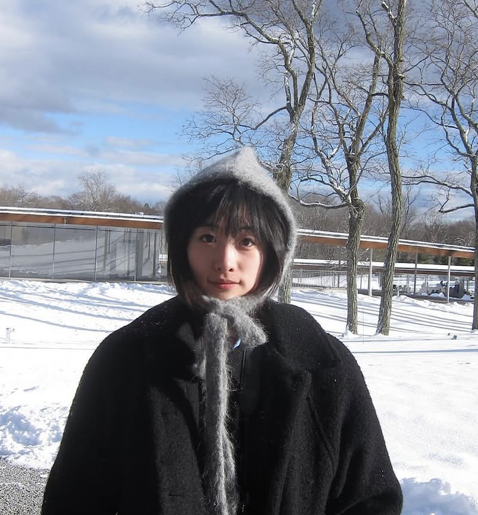

Boundary Integral Methods for Complex 2D Domains
Research assistant
Supervised by Prof. Denis Zorin
Developed boundary integral solvers for Laplace’s equation on complex 2D domains, and built tools to smooth and prepare domain boundaries.
Hello! I'm Letao Chen (陈乐陶), I’m a Ph.D. student in Computer Science at the University of Southern California, advised by Prof. Oded Stein and Prof. Yue Wang. My research focuses on geometry processing, computer graphics, and scientific computing.
Before USC, I received an M.S. in Scientific Computing from the Courant Institute of Mathematical Sciences at NYU advised by Prof. Denis Zorin, and an Honours B.Sc. in Applied Mathematics from the University of Toronto.

One paper conditionally accepted at ACM Transactions on Graphics (TOG)🎉
Research assistant
Supervised by Prof. Denis Zorin
Developed boundary integral solvers for Laplace’s equation on complex 2D domains, and built tools to smooth and prepare domain boundaries.
Undergraduate Research Fellow
Supervised by Prof. Eric Darve and Abeynaya Gnanasekaran
Applied Laplacian-based mesh deformation to generate anatomically plausible cardiovascular model variations and constructed high-quality volumetric meshes from surface representations.
Teaching Assistant
CSCI 585: Database Systems · Spring 2025, Fall 2026
CSCI 170: Discrete Methods in Computer Science · Spring 2026
MATH-UA 329: Honors Analysis II · Spring 2024
CSCI-UA 421: Numerical Computing · Spring 2023